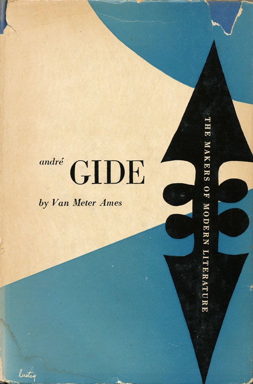

Alvin Lustig
Born Modern
Steven Heller
Reposted from AIGA’s website. Images borrowed from Flickr user Scott Lindberg.
Alvin Lustig’s contributions to the design of books and book jackets, magazines, interiors, and textiles as well as his teachings would have made him a credible candidate for the AIGA Lifetime Achievement award when he was alive. By the time he died at the age of forty in 1955, he had already introduced principles of Modern art to graphic design that have had a long-term influence on contemporary practice. He was in the vanguard of a relatively small group who fervently, indeed religiously, believed in the curative power of good design when applied to all aspects of American life. He was a generalist, and yet in the specific media in which he excelled he established standards that are viable today. If one were to reconstruct, based on photographs, Lustig’s 1949 exhibition at The Composing Room Gallery in New York, the exhibits on view and the installation would be remarkably fresh, particularly in terms of the current trends in art-based imagery.
Lustig created monuments of ingenuity and objects of aesthetic pleasure. Whereas graphic design history is replete with artifacts that define certain disciplines and are also works of art, for a design to be so considered it must overcome the vicissitudes of fashion and be accepted as an integral part of the visual language. Though Lustig would consider it a small part of his overall output, no single project is more significant in this sense than his 1949 paperback cover for Lorca: 3 Tragedies. It is a masterpiece of symbolic acuity, compositional strength and typographic craft that appears to be, consciously or not, the basis for a great many contemporary book jackets and paperback covers.
 Andre Gide
Democracy in America 1
Democracy in America 2
The current preference among American book jacket designers for fragmented images, photo-illustration, minimal typography and rebus-like compositions can be traced directly to Lustig’s stark black-and-white cover for Lorca, a grid of five symbolic photographs linked in poetic disharmony. This and other distinctive, though today lesser known, covers for the New Directions imprint transformed an otherwise realistic medium—the photograph—into a tool for abstraction through the use of reticulated negatives, photograms and still-lifes. When Lustig’s approach (which developed from an interest in montage originally practiced by the European Moderns, particularly the American expatriate E. McKnight Kauffer) was introduced to American book publishing in the late 1940s, covers and jackets were mostly illustrative and also rather decorative. Hard-sell conventions were rigorously followed. Lustig’s jacket designs entered taboo marketing territory through his use of abstraction and small, discreetly typeset titles, influenced by the work of Jan Tschichold. Lustig did not believe it was necessary to “design down,” as he called it, to achieve better sales.
Five Stories
He further rejected the typical cover design that summarized a book through one generalized image. “His method was to read a text and get the feel of the author’s creative drive, then to restate it in his own graphic terms,” wrote James Laughlin in ”The Book Jackets of Alvin Lustig” (Print, vol. 10 no. 5, October 1956). As publisher of New Directions, Laughlin hired Lustig in the early 1940s and gave him the latitude to experiment with personal graphic forms. New Directions’ quirky list of reprints, which featured such authors as Henry Miller, Gertrude Stein, D.H. Lawrence and James Joyce, was a proving ground for the designer’s visual explorations and distinctive graphic poetry.
 Forster
Forster
Freud or Jung
Lustig’s first jacket for Laughlin, a 1941 edition of Henry Miller’s Wisdom of the Heart, eclipsed the jacket designs of previous New Directions books, which Laughlin described as “conservative” and “booky.” At the time, Lustig was experimenting with non-representational constructions made form slugs of metal typographic material, revealing the influence of Frank Lloyd Wright, with whom he studied for three months at Taliesen East. The most interesting of these slug compositions was for Ghost in the Underblows (1940) for Ward Ritchie Press, which echoed Constructivist typecase experiments from the early twenties yet revealed a distinctly native American aesthetic. Though these designs were unconventional, some years later Laughlin noted that they “scarcely hinted at the extraordinary flowering which was to follow.”
Laughlin was referring the New Classics series by New Directions that Lustig designed from 1945 to 1952. With few exceptions, the New Classics are as inventive today as when they premiered almost fifty years ago. Lustig had switched over from typecase compositions to drawing his distinctive symbolic “marks,” which owed more to the work of artists like Paul Klee, Joan Miró and Mark Rothko than to any accepted commercial style. Although Lustig rejected painting as a being too subjectivized and never presumed to paint or sculpt himself, he liberally borrowed from painting and integrated the abstract sensibility into his total design.
Mozart
Phases
The new Classics succeeded where other popular literary series, such as the Modern Library and Everyman’s Library, failed because of inconsistent art direction and flawed artwork. Each New Classics jacket had its own character, with Lustig brilliantly maintaining unity through strict formal consistency. At no time did his look overpower the books. This kind of consistency is virtually unheard of today in a publishing field where, according to Lustig’s former client and friend Arthur Chohen, design is “wedded to rapidity and obsolescence, immediacy without subtlety.” Lustig’s jacket designs for New Directions demanded contemplation: they were not point-of-purchase visual stimulants.
The Philosophy of Modern Art
The Spoils of War
The Wander
It is not surprising that Lustig’s early work would challenge the norm. He once proclaimed that he was “born Modern” and had made an early decision to practice as a “Modern” rather than a “traditional” designer. He was born in 1915 in Denver to a family that he said had “absolutely no pretensions to culture.” He was a poor student who avoided going to classes by becoming an itinerant magician for various school assemblies around Los Angeles, where the family had resettled. And yet it was in high school that he was introduced by “an enlightened teacher” to Modern art, sculpture and French posters. “This art hit a fresh eye, unencumbered by any ideas of what art was or should be, and found an immediate sympathetic response,” he wrote in “Personal Notes on Design” (AIGA Journal, Vol. 3 No. 4, 1953). “This ability to ‘see’ freshly, unencumbered by preconceived verbal, literary or moral ideas, is the first step in responding to most modern art.” Fascinated by posters, he began devoting more time to making his own magic-show posters than to refining his act.
At twenty-one, he became a freelance printer and typographer doing jobs on a letter-press that he kept in the back room of a drugstore. It was there that he began to create purely abstract geometric designs using type ornaments, or what a friend termed “queer things with type.” A year or so later he retired from printing to devote himself exclusively to design. He became a charter member of a very small group (including Saul Bass, Rudolph de Harak, John Foli and Louis Danziger) called The Los Angeles Society for Contemporary Designers, whose members were frustrated by the dearth of creative vision exhibited by West Coast business.
The paucity of work in California forced Lustig to move to New York in 1944, where he became visual research director of Look magazine’s design department until 1946. He not only designed progressive-looking printed house organs and promotional materials, he designed the actual department in a Modern manner. While in New York, he took up interior design and began exploring industrial design as well. In 1946 he returned to Los Angeles and for five years ran an office specializing in architectural, furniture and fabric design, while continuing his book and editorial work. To hire Lustig was to get more than a cosmetic makeover. He wanted to be totally involved in an entire design program—from business card to office building. His designs for both the print materials and office interiors for Lightolier exemplify the strict and total unity of his vision.
Lustig is known for his expertise in virtually all the design disciplines, which he seamlessly integrated into his life. He designed record albums, magazines (notably the format and some covers of Industrial Design), advertisements, commercial catalogs, annual reports and office spaces and textiles. In the late forties he designed a helicopter for Rotoron, a pioneering though short-lived aerospace company. In 1950 he was commissioned by Gruen and Associates, a California architectural firm headed by the Viennese architect Victor Gruen, to design the coordinated signage (entrance and parking lot signs and watertower) for J. L. Hudson’s Northland in Detroit, the first American shopping mall. As evidence of his eclecticism, around 1952 he designed the opening sequence for the popular animated cartoon series Mr. Magoo. In 1953 he designed various print materials for the Girl Scouts of America and transformed aspects of their graphic identity from homespun quaintness to sophisticated Modern. He was passionate about design education, and developed design courses and workshops for Black Mountain College in North Carolina and the design department at Yale. Yet for all his accomplishments, he wanted most to be an architect, for which he had neither the training nor the credentials.
Although Lustig’s work appeared revolutionary in the 1940s, he was not the radical that critics feared. His design stressed the formal aspects of a problem, and in matters of formal practice he was precise to a fault. In his essay “Contemporary book Design” (Design Quarterly, no. 31, 1954), he notes: “The factors that produce quality are the same in the traditional and contemporary book. Wherein, then, lies difference? Perhaps the single most distinguishing factor in the approach of the contemporary designer is his willingness to let the problem act upon him freely and without preconceived notions of the forms it should take.” While the early Moderns vehemently rejected the sanctity of the classical frame—the central axis—Lustig sought to reconcile old and new. He understood that the tradition of fine bookmaking, for example, was closely aligned with scholarship and humanism, and yet the primacy of the word, the key principle in classic book design, required reevaluation. ”I think we are learning slowly how to come to terms with tradition without forsaking any of our own new basic principles,” he wrote in “Personal Notes on Design.” “As we become more mature we will learn to master the interplay between the past and the present and not be so self-conscious of our rejection or acceptance of tradition. We will not make the mistake that both rigid modernists and conservatives make, of confusing the quality of form with the specific forms themselves.”
Lustig’s covers for Noonday Press (Meridian books), produced between 1951 and 1955, avoid the rigidity of both traditional and Modern aesthetics. They serve as signposts for the direction his general design had taken. At the time American designers were obsessed with the new types being produced in Europe—not just the modern sans serifs, but recuts of old gothics and slab serifs—which were difficult to obtain in the United States. Lustig ordered specimen books from England and Germany that he would photostat and either piece together or redraw. These faces became the basis for more eclectic compositions. Lustig also became interested in, and to a certain extent adopted, the colder Swiss approach. Perhaps this accounts for the decidedly more quiet look of the Noonday line. To distinguish these particular books, which focused on literary and social criticism, philosophy and history, from his New Directions fiction covers, he switched from pictorial imagery to pure typography set against flat color backgrounds. The typical paperback cover of that era was characterized by overly rendered illustrations or thoughtlessly composed calligraphy. Lustig’s subtle economy was a counterpoint to the industry’s propensity for clutter and confusion.
Lustig’s work reveals an evolution from an experimental to mature practice—from total abstraction to symbolic typography. One cannot help but speculate about how he would have continued had he lived past his fortieth year. Diabetes began to erode his vision in 1950 and by 1954 he was virtually blind, yet even this limitation did not prevent him from teaching or designing. After learning that he was losing his vision, he invited his clients to a cocktail party in order to announce it to them, and give them the option to take their business to other designers. Most remained with Lustig. Philip Johnson, a key client and patron, even contracted Lustig to design the signs for the Seagram’s building. His wife, Elaine Lustig Cohen, recalls that he fulfilled his obligations by directing her and his assistants in every meticulous detail to complete the work he could no longer see. He specified color by referring to the color of a chair or sofa in their house and used simple geometries to express his fading vision.
In the 1950s, Lustig decided to emigrate to Israel, not from any religious conviction, but because he believed that in this infant state good design could exert a significant impact on society. But Lustig died in 1955 before he had the chance to test this theory. Instead, he left behind a body of unique design that stands up to the scrutiny of time, and models how a personal vision wedded to Modern form can be effectively applied in the public sphere.
Copyright 1994 by The American Institute of Graphic Arts.